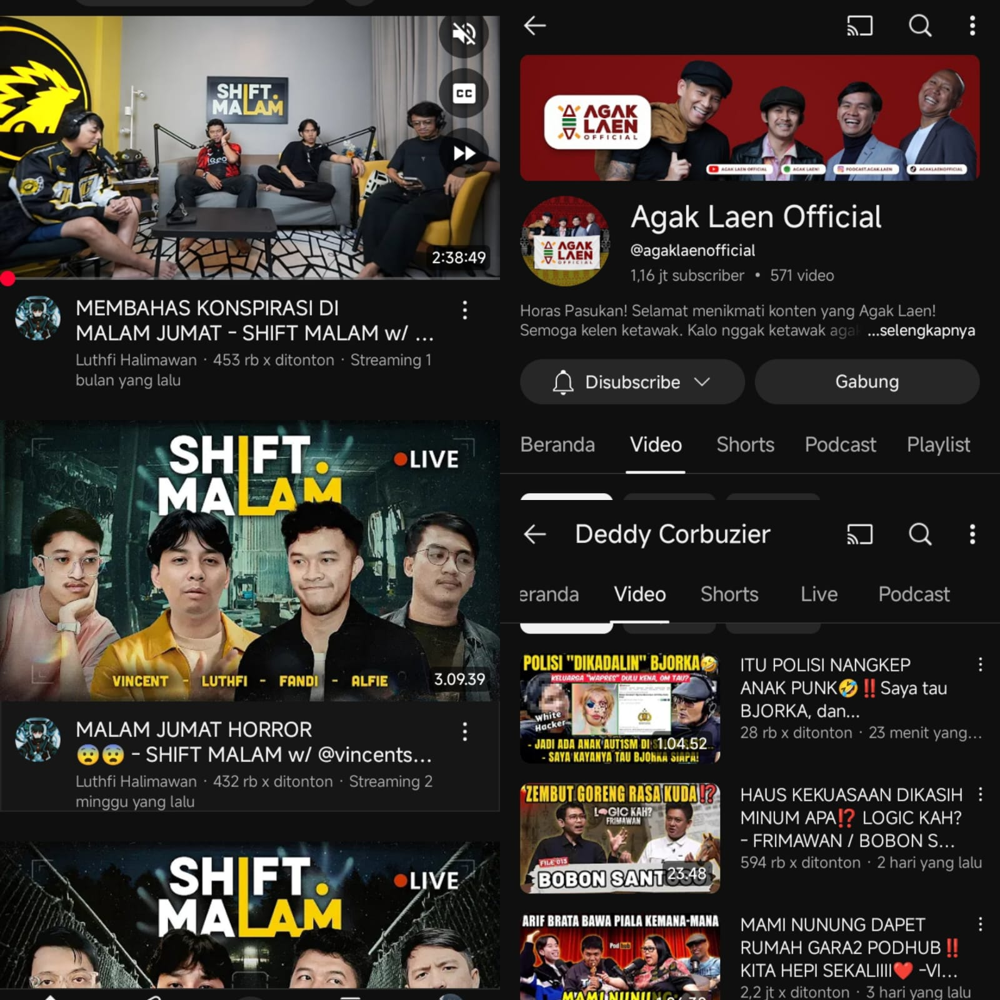
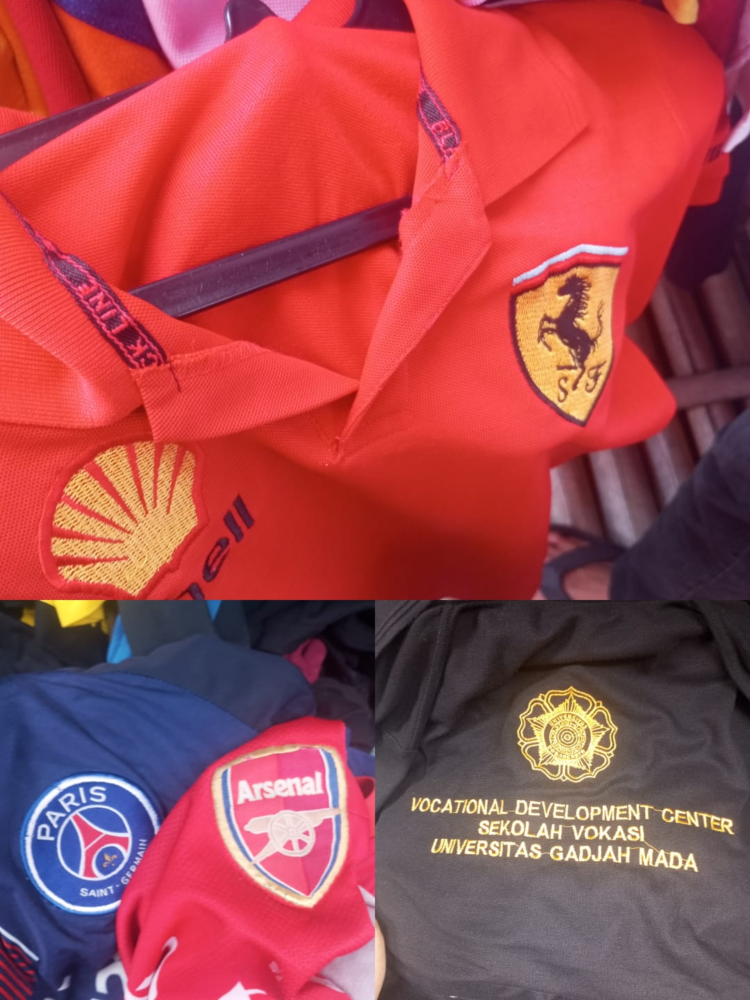
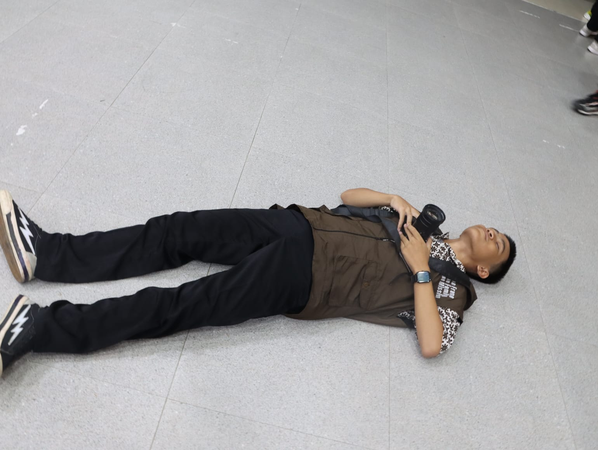

ARTIKEL : HOBI DAN KEGIATAN SAYA
Menonton Podcast, Thrifting, Dan Photografi
 |
Menonton podcast itu seru banget, soalnya kita bisa dapet insight baru tanpa harus baca panjang lebar.
Sambil rebahan atau jalan, bisa dengerin obrolan menarik, nambah ilmu, dapet motivasi,
bahkan
kadang bisa ngakak juga. Jadi hiburan yang tetap bikin otak jalan! 🎧 |
Berikut adalah channel yang sering saya tonton
|
 |
Thrifting buatku bukan sekadar belanja murah, tapi seni menemukan kembali nilai dari barang-barang lama.
Dari sana, aku sering nemu pakaian original yang masih keren banget, cocok untuk dikoleksi sendiri atau dijual lagi buat dapet
cuan tambahan. Serunya lagi, setiap barang punya cerita dan itu yang bikin kegiatan ini nggak pernah ngebosenin. |
Berikut pasar yang sering saya kunjungi :
|
 |
fotografi bukan cuma soal jepret dan simpan gambar. Ini tentang menangkap momen, membekukan emosi, dan menceritakan kisah lewat cahaya dan bayangan.
Lewat lensa kamera,aku belajar melihat dunia dari sudut yang berbeda hal-hal sederhana jadi luar biasa, dan yang biasa saja bisa jadi penuh makna.
Setiap klik punya rasa, setiap foto punya cerita.📸 |
Berikut adalah kegiatan saya dengan hobby saya :
|
|